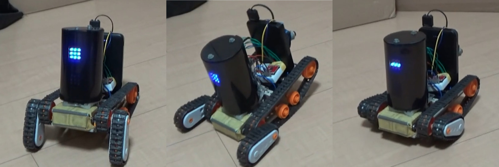

せいべつ：男
レベル：20
好きなもの：[python, ボイスロイド, AI, MGS, 少女終末旅行, 攻殻機動隊, Nier, 宇宙工学]
特技：バスケットボールを指先で回すやつ10秒できる
対応言語：[python, 日本語, 英語, utf-8, c, c#, 二進数, (アルカ, モールス信号)]
ちから：35
すばやさ：10
たいりょく： 7
そうび： 複素積分シミュレータ, タミヤのクローラ, 言語モデル

活動実績：
・部活がんばった（クリックしてリンクへ）実用性：

横山光輝 著 『三国志』より
サイト制作参考：